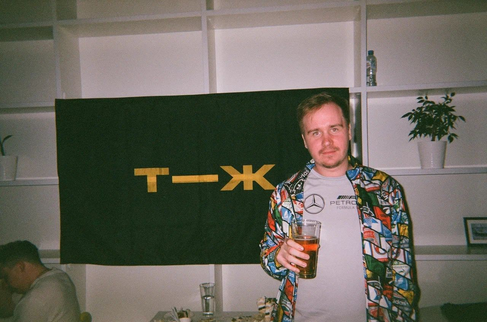

Валерий Трусевич, шеф-редактор

Санкт-Петербург, зима 2025
Резюме
- Т—Ж
- Шеф спортивной редакции
- Запустил и руковожу спортивным направлением. Отвечаю за контент-план, качество, работу с авторами, найм. Обучаю и курирую работу редакторов. Слежу за метриками, придумываю новые рубрики и информационные продукты.
- Редактор раздела экономики и инвестиций
- Редактировал статьи и новости. Писал самостоятельно и собирал еженедельную почтовую рассылку «Инвестник». Работал над спецпроектами и продуктовыми задачами вместе с шеф-редактором.
- Выпускающий редактор
- Организовывал выпуск статей. Отвечал за качество верстки, сроки выпуска, организацию взаимодействия фоторедакторов, корректоров, верстальщиков и редакторов.
- Верстальщик
- Верстал статьи, разрабатывал инструменты для автоматизации верстки.
- PrimaveraHQ
- Младший дизайнер интерфейсов
- Разрабатывал дизайн продуктов компании. Работал над 4 проектами, проектировал пользовательские интерфейсы, лэндинги, верстал некоторые проекты.
- HTML Academy × Liga A
- Руководитель отдела тестирования
- Сопровождал сложные коммерческие проекты, организовывал работу исполнителей, коммуникацию с заказчиком, собирал необходимые сведения и составлял ТЗ. Обучал новых сотрудников, разрабатывал внутренние гайды и документацию отдела тестирования. Тестировал проекты, изучал состояния всех проектов в потоке.
- Тестировщик
- Тестировал коммерческие и учебные проекты, контролировал сроки. Взаимодействовал и обучал команду разработчиков.
- Университет ИТМО
- Преподаватель математики и информатики
- Вел курс предпрофильной подготовки для абитуриентов факультета среднего профессионального образования Университета ИТМО.
Образование
- СПБГУТД, факультет автоматизации и программирования
- РГПУ им. Герцена, факультет математики
- Университет ИТМО, факультет среднего профессионального образования
Курсы
Статьи для Т—Ж
© 2026
Telegram
·
Instagram
·
Twitter
·
LinkedIn